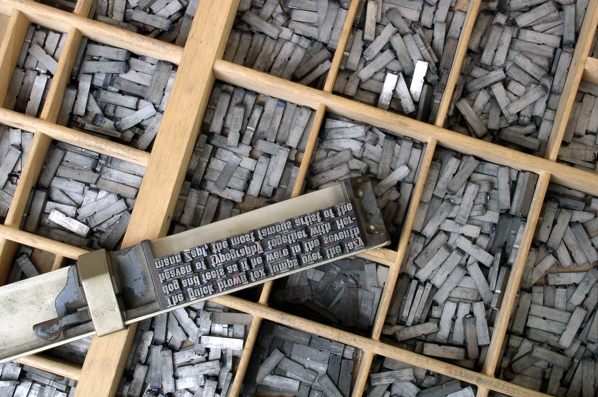

Johannes Gensfleisch zur Laden zum Gutenberg (c. 1398 – 1468) was a German blacksmith, goldsmith, printer, and publisher who introduced printing to Europe. His invention of mechanical movable type printing started the Printing Revolution and is widely regarded as the most important event of the modern period. It played a key role in the development of the Renaissance, Reformation, the Age of Enlightenment, and the Scientific revolution and laid the material basis for the modern knowledge-based economy and the spread of learning to the masses.
With his invention of the printing press, Gutenberg was the first European to use movable type printing, in around 1439. Among his many contributions to printing are: the invention of a process for mass-producing movable type; the use of oil-based ink; and the use of a wooden printing press similar to the agricultural screw presses of the period. His truly epochal invention was the combination of these elements into a practical system that allowed the mass production of printed books and was economically viable for printers and readers alike. Gutenberg’s method for making type is traditionally considered to have included a type metal alloy and a hand mould for casting type. The alloy was a mixture of lead, tin, and antimony that melted at a relatively low temperature for faster and more economical casting, cast well, and created a durable type.
In Renaissance Europe, the arrival of mechanical movable type printing introduced the era of mass communication which permanently altered the structure of society. The relatively unrestricted circulation of information — including revolutionary ideas — transcended borders, captured the masses in the Reformation and threatened the power of political and religious authorities; the sharp increase in literacy broke the monopoly of the literate elite on education and learning and bolstered the emerging middle class. Across Europe, the increasing cultural self-awareness of its people led to the rise of proto-nationalism, accelerated by the flowering of the European vernacular languages to the detriment of Latin’s status as lingua franca. In the 19th century, the replacement of the hand-operated Gutenberg-style press by steam-powered rotary presses allowed printing on an industrial scale, while Western-style printing was adopted all over the world, becoming practically the sole medium for modern bulk printing.
The use of movable type was a marked improvement on the handwritten manuscript, which was the existing method of book production in Europe, and upon woodblock printing, and revolutionized European book-making. Gutenberg’s printing technology spread rapidly throughout Europe and later the world.
His major work, the Gutenberg Bible (also known as the 42-line Bible), has been acclaimed for its high aesthetic and technical quality.
Around 1439, Gutenberg was involved in a financial misadventure making polished metal mirrors (which were believed to capture holy light from religious relics) for sale to pilgrims to Aachen: in 1439 the city was planning to exhibit its collection of relics from Emperor Charlemagne but the event was delayed by one year due to a severe flood and the capital already spent could not be repaid. When the question of satisfying the investors came up, Gutenberg is said to have promised to share a “secret”. It has been widely speculated that this secret may have been the idea of printing with movable type. Also around 1439–1440, the Dutch Laurens Janszoon Coster came up with the idea of printing. Legend has it that the idea came to him “like a ray of light”.
Until at least 1444 he lived in Strasbourg, most likely in the St. Arbogast parish. It was in Strasbourg in 1440 that Gutenberg is said to have perfected and unveiled the secret of printing based on his research, mysteriously entitled Kunst und Aventur (art and enterprise). It is not clear what work he was engaged in, or whether some early trials with printing from movable type may have been conducted there. After this, there is a gap of four years in the record. In 1448, he was back in Mainz, where he took out a loan from his brother-in-law Arnold Gelthus, quite possibly for a printing press or related paraphernalia. By this date, Gutenberg may have been familiar with intaglio printing; it is claimed that he had worked on copper engravings with an artist known as the Master of Playing Cards.
By 1450, the press was in operation, and a German poem had been printed, possibly the first item to be printed there. Gutenberg was able to convince the wealthy moneylender Johann Fust for a loan of 800 guilders. Peter Schöffer, who became Fust’s son-in-law, also joined the enterprise. Schöffer had worked as a scribe in Paris and is believed to have designed some of the first typefaces.
All that has been written to me about that marvelous man seen at Frankfurt is true. I have not seen complete Bibles but only a number of quires of various books of the Bible. The script was very neat and legible, not at all difficult to follow—your grace would be able to read it without effort, and indeed without glasses.
—Future pope Pius II in a letter to Cardinal Carvajal, March 1455
Gutenberg’s workshop was set up at Hof Humbrecht, a property belonging to a distant relative. It is not clear when Gutenberg conceived the Bible project, but for this he borrowed another 800 guilders from Fust, and work commenced in 1452. At the same time, the press was also printing other, more lucrative texts (possibly Latin grammars). There is also some speculation that there may have been two presses, one for the pedestrian texts, and one for the Bible. One of the profit-making enterprises of the new press was the printing of thousands of indulgences for the church, documented from 1454–55.
In 1455 Gutenberg completed his 42-line Bible, known as the Gutenberg Bible. About 180 copies were printed, most on paper and some on vellum.
Some time in 1456, there was a dispute between Gutenberg and Fust, and Fust demanded his money back, accusing Gutenberg of misusing the funds. Meanwhile the expenses of the Bible project had proliferated, and Gutenberg’s debt now exceeded 20,000 guilders. Fust sued at the archbishop’s court. A November 1455 legal document records that there was a partnership for a “project of the books,” the funds for which Gutenberg had used for other purposes, according to Fust. The court decided in favor of Fust, giving him control over the Bible printing workshop and half of all printed Bibles.
Thus Gutenberg was effectively bankrupt, but it appears he retained (or re-started) a small printing shop, and participated in the printing of a Bible in the town of Bamberg around 1459, for which he seems at least to have supplied the type. But since his printed books never carry his name or a date, it is difficult to be certain, and there is consequently a considerable scholarly debate on this subject. It is also possible that the large Catholicon dictionary, 300 copies of 754 pages, printed in Mainz in 1460, may have been executed in his workshop.
Meanwhile, the Fust–Schöffer shop was the first in Europe to bring out a book with the printer’s name and date, the Mainz Psalter of August 1457, and while proudly proclaiming the mechanical process by which it had been produced, it made no mention of Gutenberg.
In 1462, during a conflict between two archbishops, Mainz was sacked by archbishop Adolph von Nassau, and Gutenberg was exiled. An old man by now, he moved to Eltville where he may have initiated and supervised a new printing press belonging to the brothers Bechtermünze.
In January 1465, Gutenberg’s achievements were recognized and he was given the title Hofmann (gentleman of the court) by von Nassau. This honor included a stipend, an annual court outfit, as well as 2,180 litres of grain and 2,000 litres of wine tax-free. It is believed he may have moved back to Mainz around this time, but this is not certain.
Gutenberg died in 1468 and was buried in the Franciscan church at Mainz, his contributions largely unknown. This church and the cemetery were later destroyed, and Gutenberg’s grave is now lost.
In 1504, he was mentioned as the inventor of typography in a book by Professor Ivo Wittig. It was not until 1567 that the first portrait of Gutenberg, almost certainly an imaginary reconstruction, appeared in Heinrich Pantaleon’s biography of famous Germans.
Gutenberg’s early printing process, and what tests he may have made with movable type, are not known in great detail. His later Bibles were printed in such a way as to have required large quantities of type, some estimates suggesting as many as 100,000 individual sorts. Setting each page would take, perhaps, half a day, and considering all the work in loading the press, inking the type, pulling the impressions, hanging up the sheets, distributing the type, etc., it is thought that the Gutenberg–Fust shop might have employed as many as 25 craftsmen.

Movable metal type, and composing stick, descended from Gutenberg’s press. Photo by Willi Heidelbach. Licensed under CC BY 2.5
Gutenberg’s technique of making movable type remains unclear. In the following decades, punches and copper matrices became standardized in the rapidly disseminating printing presses across Europe. Whether Gutenberg used this sophisticated technique or a somewhat primitive version has been the subject of considerable debate.
In the standard process of making type, a hard metal punch (made by punchcutting, with the letter carved back to front) is hammered into a softer copper bar, creating a matrix. This is then placed into a hand-held mould and a piece of type, or “sort”, is cast by filling the mould with molten type-metal; this cools almost at once, and the resulting piece of type can be removed from the mould. The matrix can be reused to create hundreds, or thousands, of identical sorts so that the same character appearing anywhere within the book will appear very uniform, giving rise, over time, to the development of distinct styles of typefaces or fonts. After casting, the sorts are arranged into type-cases, and used to make up pages which are inked and printed, a procedure which can be repeated hundreds, or thousands, of times. The sorts can be reused in any combination, earning the process the name of “movable type”.
The invention of the making of types with punch, matrix and mold has been widely attributed to Gutenberg. However, recent evidence suggests that Gutenberg’s process was somewhat different. If he used the punch and matrix approach, all his letters should have been nearly identical, with some variations due to miscasting and inking. However, the type used in Gutenberg’s earliest work shows other variations.
It is a press, certainly, but a press from which shall flow in inexhaustible streams… Through it, god will spread his word.
In 2001, the physicist Blaise Agüera y Arcas and Princeton librarian Paul Needham, used digital scans of a Papal bull in the Scheide Library, Princeton, to carefully compare the same letters (types) appearing in different parts of the printed text. The irregularities in Gutenberg’s type, particularly in simple characters such as the hyphen, suggested that the variations could not have come from either ink smear or from wear and damage on the pieces of metal on the types themselves. While some identical types are clearly used on other pages, other variations, subjected to detailed image analysis, suggested that they could not have been produced from the same matrix. Transmitted light pictures of the page also appeared to reveal substructures in the type that could not arise from traditional punchcutting techniques. They hypothesized that the method may have involved impressing simple shapes to create alphabets in “cuneiform” style in a matrix made of some soft material, perhaps sand. Casting the type would destroy the mould, and the matrix would need to be recreated to make each additional sort. This could explain the variations in the type, as well as the substructures observed in the printed images.
Thus, they feel that “the decisive factor for the birth of typography”, the use of reusable moulds for casting type, might have been a more progressive process than was previously thought. They suggest that the additional step of using the punch to create a mould that could be reused many times was not taken until twenty years later, in the 1470s. Others have not accepted some or all of their suggestions, and have interpreted the evidence in other ways, and the truth of the matter remains very uncertain.
A 1568 history by Hadrianus Junius of Holland claims that the basic idea of the movable type came to Gutenberg from Laurens Janszoon Coster via Fust, who was apprenticed to Coster in the 1430s and may have brought some of his equipment from Haarlem to Mainz. While Coster appears to have experimented with moulds and castable metal type, there is no evidence that he had actually printed anything with this technology. He was an inventor and a goldsmith. However, there is one indirect supporter of the claim that Coster might be the inventor. The author of the Cologne Chronicle of 1499 quotes Ulrich Zell, the first printer of Cologne, that printing was performed in Mainz in 1450, but that some type of printing of lower quality had previously occurred in the Netherlands. However, the chronicle does not mention the name of Coster, while it actually credits Gutenberg as the “first inventor of printing” in the very same passage (fol. 312). The first securely dated book by Dutch printers is from 1471, and the Coster connection is today regarded as a mere legend.
The 19th century printer and typefounder Fournier Le Jeune suggested that Gutenberg might not have been using type cast with a reusable matrix, but possibly wooden types that were carved individually. A similar suggestion was made by Nash in 2004. This remains possible, albeit entirely unproven.
It has also been questioned whether Gutenberg used movable types at all. In 2004, Italian professor Bruno Fabbiani claimed that examination of the 42-line Bible revealed an overlapping of letters, suggesting that Gutenberg did not in fact use movable type (individual cast characters) but rather used whole plates made from a system somewhat like a modern typewriter, whereby the letters were stamped successively into the plate and then printed. However, most specialists regard the occasional overlapping of type as caused by paper movement over pieces of type of slightly unequal height.
Although Gutenberg was financially unsuccessful in his lifetime, the printing technologies spread quickly, and news and books began to travel across Europe much faster than before. It fed the growing Renaissance, and since it greatly facilitated scientific publishing, it was a major catalyst for the later scientific revolution.
The capital of printing in Europe shifted to Venice, where visionary printers like Aldus Manutius ensured widespread availability of the major Greek and Latin texts. The claims of an Italian origin for movable type have also focused on this rapid rise of Italy in movable-type printing. This may perhaps be explained by the prior eminence of Italy in the paper and printing trade. Additionally, Italy’s economy was growing rapidly at the time, facilitating the spread of literacy. Christopher Columbus had a geographical book (printed by movable types) bought by his father. That book is in a Spanish museum. Finally, the city of Mainz was sacked in 1462, driving many (including a number of printers and punch cutters) into exile.
Printing was also a factor in the Reformation. Martin Luther’s 95 Theses were printed and circulated widely; subsequently he issued broadsheets outlining his anti-indulgences position (certificates of indulgences were one of the first items Gutenberg had printed). The broadsheet contributed to development of the newspaper.
In the decades after Gutenberg, many conservative patrons looked down on cheap printed books; books produced by hand were considered more desirable.
Today there is a large antique market for the earliest printed objects. Books printed prior to 1500 are known as incunabula.